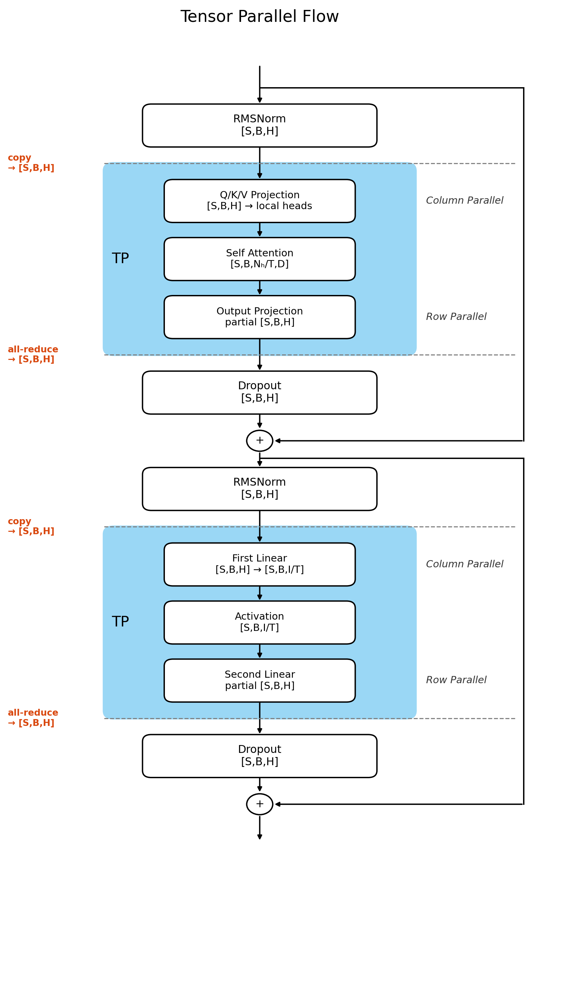
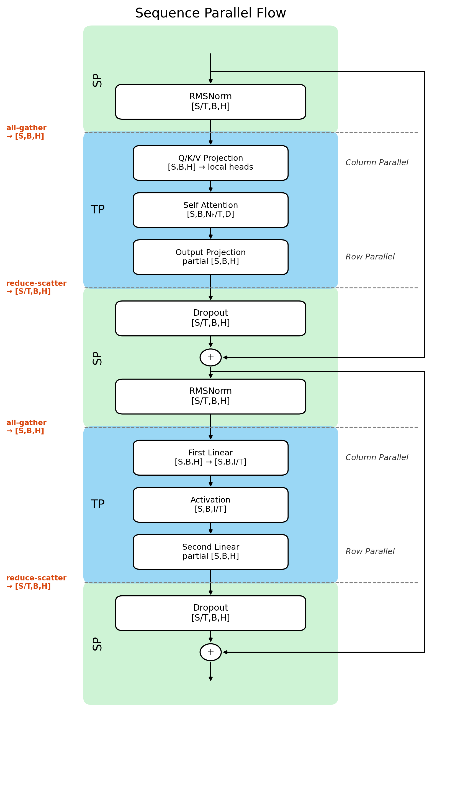

flowchart LR
classDef tp fill:#5f3dc4,stroke:#3b2585,color:#ffffff,stroke-width:2px;
classDef data fill:#1971c2,stroke:#0b4a85,color:#ffffff,stroke-width:1px;
classDef local fill:#2b8a3e,stroke:#176329,color:#ffffff,stroke-width:1px;
TP1["TP 区域 A<br/>输出经过 all-reduce"]:::tp
subgraph BETWEEN["两个 TP 区域之间"]
direction TB
subgraph R0["rank 0"]
H0["H0<br/>[S,B,H]"]:::data
L0["RMSNorm<br/>Dropout<br/>residual add"]:::local
H0 --> L0
end
subgraph R1["rank 1"]
H1["H1<br/>[S,B,H]"]:::data
L1["RMSNorm<br/>Dropout<br/>residual add"]:::local
H1 --> L1
end
end
TP2["TP 区域 B<br/>读取相同输入"]:::tp
TP1 --> H0
TP1 --> H1
L0 --> TP2
L1 --> TP2
3 Sequence Parallelism：布局与梯度
3.1 为什么需要 Sequence Parallelism
TP 已经切分了 Attention heads 和 MLP intermediate dimension，但这并不意味着整个 Transformer block 的显存占用可以变为 \(1/T\)。Sequence Parallelism （SP）就是为了进一步降低显存占用而提出的。
先分析一下 Transformer block 中 两个 TP 区域之间的计算：
图中的 \(H_0\) 和 \(H_1\) 是数值相同的两份完整 tensor。它们来自 All-reduce 后的 Row Parallel Linear 的输出：每个 rank 先产生一份完整 shape 的部分结果，
\[ P_t: [S, B, H] \]
接着在离开并行区域时执行 all-reduce：
\[ Y=\sum_{t=0}^{T-1}P_t, \]
于是每个 rank 都得到完整的 \(Y\)。但紧接着的 RMSNorm、Dropout 和 residual add 都是逐 token 操作，让所有 rank 保存并处理全部 \(S\) 个 token 没有必要。是否可以让每个 rank 只负责一段互不重复的 sequence？
先不考虑具体使用哪种 collective 可以做到我们想要的结果，把离开 TP 区域和重新进入 TP 区域时的两次布局转换分别记为 \(f\) 和 \(g\)。我们希望得到下面的数据流：
flowchart LR
classDef tp fill:#5f3dc4,stroke:#3b2585,color:#ffffff,stroke-width:2px;
classDef transform fill:#e8590c,stroke:#8a2e00,color:#ffffff,stroke-width:2px;
classDef data fill:#1971c2,stroke:#0b4a85,color:#ffffff,stroke-width:1px;
classDef local fill:#2b8a3e,stroke:#176329,color:#ffffff,stroke-width:1px;
TP1["TP 区域 A"]:::tp
F["f<br/>完整 → sequence shards"]:::transform
subgraph SP["两个 TP 区域之间"]
direction TB
subgraph R0["rank 0"]
S0["sequence shard 0<br/>[S/2,B,H]"]:::data
L0["本地逐 token 操作"]:::local
S0 --> L0
end
subgraph R1["rank 1"]
S1["sequence shard 1<br/>[S/2,B,H]"]:::data
L1["本地逐 token 操作"]:::local
S1 --> L1
end
end
G["g<br/>sequence shards → 完整"]:::transform
TP2["TP 区域 B"]:::tp
TP1 --> F
F --> S0
F --> S1
L0 --> G
L1 --> G
G --> TP2
此时两个 rank 不再保存相同的完整 hidden states，而是各自处理一段 sequence。接下来从普通 TP 的 all-reduce 出发，推导 \(f\) 和 \(g\) 应该由什么通信操作实现。
3.3 SP 如何在两种 Tensor Layout 之间切换
到这里，SP forward 需要的两种布局已经出现：
TP 区域内: [S, B, H]
TP 区域之间（也就是 SP 区域）: [S/T, B, H]训练时还必须为每个布局变换定义对应的 backward，否则 forward 的 shape 即使正确，梯度也无法回到原来的数据分布。
这里有三类性质不同的切换，值得先分清楚：
一次性入口：模型最开始的 Split
只发生一次，把完整 sequence Embedding 第一次切成 shard，送进第一个 TP 区域
反复发生：All-Gather 与 Reduce-Scatter
每个 TP 区域进出时都会用到的一对操作
一次性出口：模型最后进入 LM Head 前的 All-Gather
只发生一次，把 SP shard 重新拼回完整 sequence，
喂给在 rank 复制的 lm_head和 TP 里那对 CopyToModelParallelRegion / ReduceFromModelParallelRegion 类似，这里的 all-gather 和 reduce-scatter 也是对偶的一对：一个的 forward 恰好是另一个的 backward。
| 发生场景 | Forward | Backward |
|---|---|---|
| 一次（模型入口） | split | all-gather |
| 每个 TP 区域入口（反复） | all-gather | reduce-scatter |
| 每个 TP 区域出口（反复） | reduce-scatter | all-gather |
| 一次（模型出口，进 LM Head） | all-gather | split |
同一个 All-Gather 在表里出现了两次、backward 却不一样，小节 3.3.2 和 小节 3.3.5 会分别解释这两种 backward 各自成立的原因。
这些算子位于：
model/tensor_parallel_mappings.py3.3.1 一次性的入口：本地切分
Embedding 输出最初是完整的 [S,B,H]，而且每个 TP rank 都已经拥有相同的数据。为了让后续 block 从一开始就工作在 SP 布局上，每个 rank 只需根据自己的 tp_rank，在本地留下对应的 sequence shard：
rank 0: [a,b,c,d] -> [a,b]
rank 1: [a,b,c,d] -> [c,d]forward:
[S,B,H] -> split -> [S/T,B,H]
backward:
[S/T,B,H] -> all-gather -> [S,B,H]这里没有 rank 之间的数据传输。源码中的 autograd 类虽然名为 ScatterToSequenceParallelRegion，但它的 forward 只是索引和 contiguous；真正的跨 rank 通信发生在 backward 的 All-Gather。
求梯度时，embedding 权重的梯度需要看到完整 sequence 上的激活梯度，而每个 rank 的梯度只来自一个 sequence shard， 所以 backward 必须先把各 rank 手上的 sequence shard 梯度 all-gather 回完整形状，再往回传。
3.3.2 反复出现的循环（一）：All-Gather 进入 TP 区域
进入 Column Parallel Linear 时，因为计算需要完整的输入，所以第一步必须把按 Sequence 切片的数据拼完整：
[S/T, B, H] -> All-Gather -> [S, B, H]3.3.2.1 为什么 Backward 一定是 Reduce-Scatter？
我们用 TP size = 2 的例子直观地推一下（以 Rank 0 原来持有的 sequence shard \(X^{(0)}\) 为例）：
- 前向广播：All-gather 拼出完整 \(X\) 后，Rank 0 和 Rank 1 都拿到了包含 \(X^{(0)}\) 的完整数据，各自过自己的 weight shard（\(W_0\) 和 \(W_1\)）。
- 两边都有梯度：到了 Backward，因为 \(X^{(0)}\) 既参与了 \(W_0\) 的计算，也参与了 \(W_1\) 的计算，所以两个 rank 都会算出一份针对 \(X^{(0)}\) 的梯度（\(dX_0^{(0)}\) 和 \(dX_1^{(0)}\)）。
- 求和并归位：根据链式法则，数据源头 \(X^{(0)}\) 的最终梯度必须是两边叠加的结果：
\[dX^{(0)} = dX_0^{(0)} + dX_1^{(0)}\]
Reduce-Scatter 在求和的同时，只把 \(X^{(0)}\) 对应的结果交还给 Rank 0；其他 sequence shard 的完整梯度则返回各自所属的 rank。
所以，这个 All-Gather 的 backward 必须且只能是 Reduce-Scatter。
flowchart TB
classDef rank0 fill:#1c7ed6,stroke:#1864ab,color:#ffffff,stroke-width:1px;
classDef rank1 fill:#d9480f,stroke:#b5370f,color:#ffffff,stroke-width:1px;
classDef comm fill:#f59f00,stroke:#d9480f,color:#ffffff,stroke-width:2px;
%% 输入节点（左右对称）
X0["Rank 0 输入<br/>Sequence Shard X⁽⁰⁾"]:::rank0
X1["Rank 1 输入<br/>Sequence Shard X⁽¹⁾"]:::rank1
%% 1. 中间 All-Gather 节点
AG["All-Gather 通信<br/>拼接得到完整 X = [X⁽⁰⁾, X⁽¹⁾]"]:::comm
%% 2. 前向计算节点
W0["Rank 0 计算<br/>Column Parallel W₀"]:::rank0
W1["Rank 1 计算<br/>Column Parallel W₁"]:::rank1
%% 3. 反向梯度节点
dX0["Rank 0 局部梯度<br/>dX₀ = [dX₀⁽⁰⁾, dX₀⁽¹⁾]"]:::rank0
dX1["Rank 1 局部梯度<br/>dX₁ = [dX₁⁽⁰⁾, dX₁⁽¹⁾]"]:::rank1
%% 4. 中间 Reduce-Scatter 节点
RS["Reduce-Scatter 通信<br/>(梯度求和 + shard 归位)"]:::comm
%% 5. 最终归位梯度
Out0["Rank 0 领回完整梯度<br/>dX⁽⁰⁾ = dX₀⁽⁰⁾ + dX₁⁽⁰⁾"]:::rank0
Out1["Rank 1 领回完整梯度<br/>dX⁽¹⁾ = dX₀⁽¹⁾ + dX₁⁽¹⁾"]:::rank1
%% Forward 数据流
X0 --> AG
X1 --> AG
AG --> W0
AG --> W1
%% Forward 到 Backward 的过渡
W0 -.-|Backward| dX0
W1 -.-|Backward| dX1
%% Backward 数据流
dX0 --> RS
dX1 --> RS
RS --> Out0
RS --> Out1
注意：同一个 All-Gather 在模型最后进入 LM head 时还会再出现一次，但那次下游不是分片计算，backward 也就不能再用 Reduce-Scatter——具体原因见 小节 3.3.5。 代码里是用这个显式的开关来区分语义的：
tensor_parallel_output_grad: bool3.3.3 反复出现的循环（二）：Reduce-Scatter 离开 TP 区域
Row Parallel Linear 恰好是个镜像对称的过程：每个 rank 算出的都是完整 sequence 上的部分结果（partial result）：
P_t: [S, B, H]这里通过一次 Reduce-Scatter，刚好把跨卡求和和按 sequence 切分两件事一次性做完，完美退出 TP 区域：
forward:
partial [S,B,H] -> reduce-scatter -> [S/T,B,H]
backward:
[S/T,B,H] -> all-gather -> [S,B,H]3.3.3.1 再看 TP size = 2 的反向逻辑
- 前向求和切分：前向传播做的是 \(P = P_0 + P_1\)，然后切分成 Sequence Shard 分发给各个 Rank。
- 反向拼回完整 Sequence：到了 Backward，下游传回来的梯度 \(dY^{(0)}\) 和 \(dY^{(1)}\) 都只有
[S/T, B, H]。要想算前向的梯度，必须先通过一次 All-Gather 把完整 sequence 上的梯度 \(dP\)（[S, B, H]）给拼出来。 - 加法节点的反向：因为前向是 \(P = P_0 + P_1\)（标准的加法节点），按照求导法则，加法节点的梯度是直接复制（Copy）给每一个输入项。所以拼出来的完整梯度 \(dP\)，Rank 0 和 Rank 1 各自要原封不动地拿走一份（\(dP_0 = dP_1 = dP\)），再去更新各自的 Row Parallel 权重。
flowchart TB
classDef rank0 fill:#1c7ed6,stroke:#1864ab,color:#ffffff,stroke-width:1px;
classDef rank1 fill:#d9480f,stroke:#b5370f,color:#ffffff,stroke-width:1px;
classDef comm fill:#f59f00,stroke:#d9480f,color:#ffffff,stroke-width:2px;
classDef logic fill:#2b8a3e,stroke:#176329,color:#ffffff,stroke-width:1px;
%% 1. 前向计算 (Row Parallel Partial 结果)
P0["Rank 0 局部结果 P₀<br/>[S, B, H]"]:::rank0
P1["Rank 1 局部结果 P₁<br/>[S, B, H]"]:::rank1
%% 2. 前向 Reduce-Scatter
RS["Reduce-Scatter 通信<br/>(求和 P = P₀ + P₁ + 保留对应 shard)"]:::comm
%% 3. 前向输出 (回到 Sequence Parallel)
Y0["Rank 0 输出 Y⁽⁰⁾<br/>[S/T, B, H]"]:::rank0
Y1["Rank 1 输出 Y⁽¹⁾<br/>[S/T, B, H]"]:::rank1
%% 4. 反向输入 (下游梯度)
dY0["Rank 0 传入梯度 dY⁽⁰⁾<br/>[S/T, B, H]"]:::rank0
dY1["Rank 1 传入梯度 dY⁽¹⁾<br/>[S/T, B, H]"]:::rank1
%% 5. 反向 All-Gather
AG["All-Gather 通信<br/>(拼接还原完整梯度 dP)"]:::comm
%% 6. 梯度的加法分配逻辑
dP_COPY["因前向 P = P₀ + P₁<br/>加法节点反向：梯度原样复制<br/>dP₀ = dP, dP₁ = dP"]:::logic
%% 7. 两个 Rank 各拿一份 dP
dP0["Rank 0 拿到完整梯度 dP₀<br/>[S, B, H]"]:::rank0
dP1["Rank 1 拿到完整梯度 dP₁<br/>[S, B, H]"]:::rank1
%% Forward 数据流
P0 --> RS
P1 --> RS
RS --> Y0
RS --> Y1
%% Forward 到 Backward 的过渡
Y0 -. Backward .-> dY0
Y1 -. Backward .-> dY1
%% Backward 数据流
dY0 --> AG
dY1 --> AG
AG --> dP_COPY
dP_COPY --> dP0
dP_COPY --> dP1
3.3.4 完整循环：All-Gather 与 Reduce-Scatter 如何配合
小节 3.3.2 和 小节 3.3.3 合在一起，就是每个 TP 区域进出时发生的数据 layout 变化的循环：
flowchart LR
classDef comm fill:#e8590c,stroke:#8a2e00,color:#ffffff,stroke-width:2px;
classDef data fill:#1971c2,stroke:#0b4a85,color:#ffffff,stroke-width:1px;
SP0["rank 0<br/>SP shard [S/2,B,H]"]:::data
SP1["rank 1<br/>SP shard [S/2,B,H]"]:::data
AG["all-gather"]:::comm
TP0["rank 0<br/>full sequence + weight shard 0"]:::data
TP1["rank 1<br/>full sequence + weight shard 1"]:::data
RS["reduce-scatter"]:::comm
OUT0["rank 0<br/>output shard [S/2,B,H]"]:::data
OUT1["rank 1<br/>output shard [S/2,B,H]"]:::data
SP0 --> AG
SP1 --> AG
AG --> TP0
AG --> TP1
TP0 --> RS
TP1 --> RS
RS --> OUT0
RS --> OUT1
Rank 顺序决定每个 rank 持有哪一段连续 sequence。所有 collective 必须使用相同 TP group，并提前满足相同的 shape、dtype 和 rank 顺序约定。
3.3.5 一次性的出口：All-Gather 进入 LM Head
和 小节 3.3.1 的入口本地切分相对，模型最后也有一次只发生一次的布局切换。
当最后一层 Transformer Block 算完，需要把 hidden 交给 lm head 去预测下一个词。 最后一个 Row Parallel 输出的 hidden states 先 all-gather 恢复成完整的 [S,B,H]， 紧接着喂给的是没有切分、在所有 TP rank 间完全复制的 lm_head 权重：
forward:
[S/T,B,H] -> all-gather -> [S,B,H]这一步的 all-gather 和 小节 3.3.2 中的 all-gather 长得一模一样，但下游完全不同：小节 3.3.2 的下游是”每个 rank 只算一部分”的 TP 分片计算，这里的下游是”每个 rank 算一模一样的一整份”——lm_head 权重是复制的，输入（刚 all-gather 出来的完整 hidden states）、labels、loss scale 在所有 rank 上也都相同。于是每个 rank 独立算出来的完整 logits、loss，乃至这一步的梯度 dX，也必然完全相同：每个 rank 手里已经是完整的梯度。
backward: split既然 \(T\) 个 rank 算出的 dX 其实是同一份完整梯度的 \(T\) 份重复，就不需要”汇总”，只需要每个 rank 从这份大家都有的完整梯度里，切出（split）自己那一段 sequence shard 就行。 如果误用 reduce-scatter，会把这份本来就正确、完整的梯度先加 \(T\) 次再切，等于错误地放大了 \(T\) 倍。 这正是 小节 3.3.2 提到的 tensor_parallel_output_grad 开关要区分的另一半语义。
把 小节 3.3.1 和 小节 3.3.5 放在一起看，SP 只在模型内部生效：外部仍然是 input_ids [B,S] 输入、logits [B,S,V] 输出，调用方不需要感知内部 sequence sharding 的存在。
3.4 复制参数的梯度同步逻辑
在张量并行（TP）中，ColumnParallelLinear 和 RowParallelLinear 的权重被切分到各个 Rank 上。得益于 TP 内部配套的通信原语（All-Reduce / Reduce-Scatter），这些切分参数的梯度能够被正确聚合，无需我们额外操心。
但模型中还存在另一类参数：它们在每个 TP Rank 上都完整复制了一份，例如 LayerNorm 的权重、Embedding 矩阵、LM Head 等。一个很自然的直觉是：“既然是复制参数，那把各个 Rank 的梯度 All-Reduce 求和一下，总归没错吧？”
然而，这个直觉并不总是对的。 如果盲目对所有复制参数执行 All-Reduce，有时会导致梯度被放大数倍（并行度倍数），而有些复制参数如果漏掉了 All-Reduce，各 Rank 的参数在更新后会发生分叉，丧失并行训练的正确性。
那么，判断一个复制参数到底“该不该同步”的核心依据是什么？
3.4.1 判断的核心标准
判断是否需要执行 All-Reduce Sum，只看一点：
在反向传播计算该参数的梯度时，各个 Rank 拿到的激活梯度（Activation Gradient）是“全量的”，还是“被切分的/局部的”？
- 局部梯度（每个 Rank 只贡献了部分 Token 或部分 Head） → 必须 All-Reduce Sum。否则各 Rank 的权重在一次更新后就会分叉。
- 全局相同梯度（每个 Rank 都拿到了完整相同的激活梯度） → 绝对不能 All-Reduce。否则梯度会被错误放大 \(T\) 倍（\(T\) 为并行度）。
3.4.2 需同步参数分类
依据上述标准，复制参数可划分为以下三类：
flowchart TD
A[复制参数<br>Replicated Parameters] --> B{反向传播时<br>激活梯度是？}
B -->|全局完整梯度| C[LM Head / Embedding]
B -->|局部梯度（序列切分）| D[SP 影响参数<br>LayerNorm / RowParallel Bias / Final Norm]
B -->|局部梯度（Head 切分）| E[TP 影响参数<br>Q-Norm / K-Norm]
C --> F[不需要 All-Reduce<br>梯度天然全局一致]
D --> G[需要 All-Reduce Sum<br>各 Rank 只算部分 Token 贡献]
E --> H[需要 All-Reduce Sum<br>各 Rank 只算部分 Head 贡献]
3.4.2.1 必须同步：受 SP 或 TP Head 切分影响的参数
这类参数在各 Rank 上虽然完整存在，但每个 Rank 在 Backward 时只计算了它的一部分贡献：
SP 切分影响（Token 维度）：
- 参数：
input_layernorm.weight、post_attention_layernorm.weight、final_norm.weight、Row Parallel bias - 原因：开启 SP 后，每个 Rank 在前向传播时只处理
[S/T, B, H]的 Token 片段。反向传播时，每个 Rank 计算出的参数梯度仅代表当前 Rank 负责的那部分 Token 的贡献，因此必须通过All-Reduce Sum累加全局 Token 的梯度。
TP 切分影响（Head 维度）：
- 参数：
q_norm.weight、k_norm.weight - 原因：即便输入序列是完整的，TP 也会将 Attention Head 切分给不同 Rank（例如 Rank 0 算 Head 0~3，Rank 1 算 Head 4~7）。每个 Rank 算出的 Q/K Norm 梯度仅包含了本地 Head 的贡献，因此无论是否开启 SP，都必须在 TP Group 内做
All-Reduce Sum。
3.4.2.2 无需同步：天然获得全局一致梯度的参数
这两类参数同样是完整复制在每个 Rank 上，但绝对不能执行 All-Reduce，否则会把梯度错误放大大模型并行度 \(T\) 倍：
- LM Head（显式拼接）： 在进入 LM Head 前，前向传播已显式执行了 All-Gather，隐藏层状态被还原为完整的
[S, B, H]。所有 Rank 拿着完全相同的输入、相同的参数和相同的 Labels 进行独立计算，反向传播时天然得到完全一模一样且完整的 LM Head 梯度。 - Embedding（隐式抵消）： 前向传播时，每个 rank 都根据完整的
input_ids计算出全量隐藏状态，随后在本地保留[S/T, B, H]的对应 shard，进入 TP 区域。 在反向传播时，这个本地切分算子的 backward（即 All-Gather）会在梯度到达 Embedding 之前，将序列维度重新拼完整。因此，Embedding 在反向传播时被动接收到了全量 Sequence 的激活梯度，算出的参数梯度天然就是全量且一致的。
当前实现通过在目标参数上注册 Hook 来完成梯度归约：
parameter.register_hook(
lambda grad: _reduce(grad, tp_group)
)3.5 一个 SP Transformer Block 的 Tensor 生命周期
小节 3.2.4 已经概括了三类区域中的 tensor layout。现在把这些布局变化放回一个完整的 MiniMind Transformer block，观察 hidden states 如何依次经过 Attention、MLP 和两条 residual 路径。
仍以 \(T=2\) 为例。TP 区域的输入和输出都保持：
[S/2,B,H]Attention 路径：
sequence shard [S/2,B,H]
-> local input RMSNorm
-> all-gather full sequence
-> local Q/K/V heads
-> local Attention
-> Row Parallel o_proj partial output
-> reduce-scatter [S/2,B,H]
-> local residual addMLP 路径：
sequence shard [S/2,B,H]
-> local post-attention RMSNorm
-> all-gather full sequence
-> Column Parallel first Linear
-> local activation
-> Row Parallel second Linear partial output
-> reduce-scatter [S/2,B,H]
-> local residual add

上图对比了 TP 和 SP 在同一个 Transformer Block 中的 tensor 布局变化：
- TP：tensor 离开 TP 区域后，仍然是完整的
[S, B, H]，TP 区域之间计算完整序列。 - TP + SP：tensor 离开 TP 区域后，变成了
[S/T, B, H]，SP 区域之间计算不同的序列 shard，再次进入 TP 区域时通过 all-gather 拼回完整序列。
注记关于通信次数的说明
上图在 Attention 和 MLP 入口处各绘制了一次 [S/T, B, H] → [S, B, H] 的 All-Gather，这是为了展现 Hidden States 在逻辑上的布局切换。
在具体的代码实现中，All-Gather 并不是在进入子层前统一执行一次，而是在每一个 Column Parallel Linear 内部独立触发的。Attention 的 Q、K、V projection 各有一次，而普通的两层 MLP 只有第一层是 Column Parallel：
| 子层 | Forward all-gather | Forward reduce-scatter |
|---|---|---|
| Attention | 3 | 1 |
| 两层 MLP | 1 | 1 |
| 每个 block 合计 | 4 | 2 |
MiniMind 源码中的 SwigLU MLP 有两个 projection （gate_proj 和 up_proj），因此实际上会比这里的普通 MLP 再多一次 all-gather。